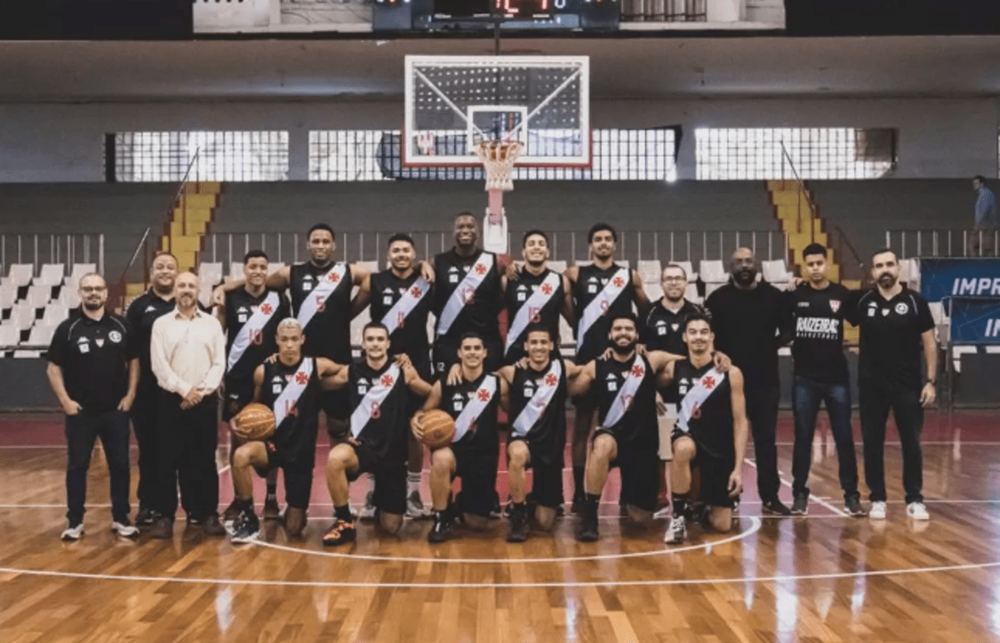

O Basquetebol do Club de Regatas Vasco da Gama é o departamento de basquetebol do clube poliesportivo brasileiro homônimo, sediado na cidade do Rio de Janeiro. O clube disputa competições com o nome fantasia Vasco da Gama Basquete, ou, por razões de patrocínio, A seção de basquete cruzmaltina foi criada em 11 de maio de 1920 (105 anos)
O time masculino do Vasco da Gama ganhou o Campeonato Nacional em 2000 e 2001, a Liga Sul-Americana de Basquete em 1999 e 2000 e o Campeonato Sul-Americano
de Clubes nos anos de 1998 e 1999. Enquanto o time feminino conquistou o Campeonato Brasileiro em 2001 e a Liga Sul-Americana de Basquetebol em 2002.
História do basquete masculino
Na Taça Brasil de 1965, a primeira competição nacional masculina de basquete, o Vasco da Gama, campeão carioca, tornou-se o vice-campeão ao perder a melhor
de três partidas para o campeão paulista Corinthians por 2 a 1.[6] Em 1966, na segunda edição da Taça Brasil disputado na cidade de Belém, no Pará, o time
novamente termina com o vice-campeonato ao perder para o mesmo Corinthians na final por 76 a 62.
Na Taça Brasil de 1980, o Vasco perdeu a final para o Franca por 87 a 67, terminando com o vice-campeonato brasileiro pela terceira vez na sua história
Em 1999, o Cruzmaltino derrotou, no Maracanãzinho, o Boca Juniors, da Argentina por 76 a 68 no segundo jogo da melhor de três partidas e conquistou o primeiro título de um clube brasileiro da Liga Sul-Americana de Basquete, garantindo vaga no torneio internacional McDonald's Championship. O clube do técnico porto-riquenho Flor Meléndez e dos jogadores Charles Byrd, Vargas, Demétrius, Rogério e Sandro Varejão jogou o McDonald's Championship de 1999 na Itália. Após vencer o Adelaide 36ers, da Austrália, na fase preliminar e o campeão da Euroliga, o BC Žalgiris, da Lituânia, na semifinal, o Vasco
perdeu a final para o San Antonio Spurs, de Tim Duncan, por 103 a 68, sendo o primeiro clube brasileiro a enfrentar uma equipe da NBA
O clube do técnico porto-riquenho Flor Meléndez e dos jogadores Charles Byrd, Vargas, Demétrius, Rogério e Sandro Varejão jogou o McDonald's Championship de 1999 na Itália. Após vencer o Adelaide 36ers, da Austrália, na fase preliminar e o campeão da Euroliga, o BC Žalgiris, da Lituânia, na semifinal, o Vasco
perdeu a final para o San Antonio Spurs, de Tim Duncan, por 103 a 68, sendo o primeiro clube brasileiro a enfrentar uma equipe da NBA.
No Campeonato Nacional de 2000, o Vasco do técnico Hélio Rubens terminou na liderança da primeira fase com 21 vitórias e apenas cinco derrotas. Nos playoffs, eliminou Londrina e o Franca, antes de enfrentar o Flamengo, de Oscar, na decisão. Na melhor de cinco jogos, o time derrota o Flamengo por 110 a 103 na
prorrogação do quarto jogo no Maracanãzinho e vence a série por 3 a 1, conquistando o primeiro título brasileiro.
Em 2001, o Vasco conquista o bicampeonato brasileiro ao derrotar na final o COC/Ribeirão Preto por 3 a 0 na melhor de cinco partidas. Em 2007, o Cruzmaltino fez um acordo com o Lobos Brasília, para que a equipe candanga disputasse o Campeonato Carioca com a camisa vascaína.
Em 2014, após sete anos, o Vasco retorna a uma competição do adulto masculino (Torneio Carioca).O clube vascaíno chegou a pedir sua inscrição para disputar o Campeonato Carioca, mas não a confirmou e desistiu da disputa.
Em 2016, a equipe disputou a Liga Ouro, torneio considerado à época o Campeonato Brasileiro da 2.ª Divisão, que dava ao campeão vaga direta ao Novo Basquete Brasil (Campeonato Brasileiro da 1.ª Divisão) na edição 2016–17. Na primeira fase, termina na segunda colocação com sete vitórias e cinco derrotas, avançando à semifinal.
O time do Vasco vence o Ginástico, de Minas Gerais, por 3 a 0 na melhor de cinco partidas e avança à final para enfrentar o time do Campo Mourão, do Paraná. O Gigante da Colina vence o quinto jogo da final por 87 a 77 no Ginásio JK, em Campo Mourão. O time havia perdido os dois primeiros jogos da série, contudo ganhou os últimos três jogos,
tornando-se campeão da Liga Ouro e garantiu vaga no NBB 9. Assim, retornou à elite do basquetebol brasileiro pela primeira vez desde 2003, quando disputou o Campeonato Nacional daquele ano.

A disputa da Liga de Ouro
Em 2016, na estreia do Campeonato Carioca, competição que não disputava desde 2007, venceu o Botafogo por 77 a 53.O time terminou a fase de classificação na segunda colocação com cinco vitórias e apenas uma derrota. Na semifinal, o time derrota o Macaé por 2 a 0 na melhor de três partidas e classifica-se para a final, onde enfrentaria o rival Flamengo. Após uma vitória de cada lado, Vasco não comparece ao último jogo da final alegando falta de segurança no Ginásio do Tijuca. Assim, o Flamengo conquistou o título estadual por W.O.
No retorno à elite nacional, Vasco derrota na prorrogação o Minas por 85 a 83 na Arena Juscelino Kubitschek, em Belo Horizonte, na estreia do NBB 9. No primeiro Clássico dos Milhões da história do NBB, Vasco derrota o Flamengo por 78 a 77 na Arena da Barra sem torcida devido à falta de efetivo da Polícia Militar do Rio de Janeiro. O time encerra a primeira fase na nona colocação com 14 vitórias e 14 derrotas, classificando-se aos playoffs.[28] Nas oitavas de finais, o time é eliminado pelo Pinheiros por 3 a 2 na melhor de cinco partidas
Em sua segunda participação no NBB, o Vasco é novamente eliminado nas oitavas de final, agora pelo Bauru por 3 a 1 na melhor de cinco partidas no NBB 10.
Depois de três parcipações no NBB, o Vasco não participou da edição de 2019–20, após a suspensão do basquete profissional do clube por questões financeiras. Desde então, o basquete adulto está desativado.
Treinador Léo Figueiró
Léo Figueiró começou sua carreira dirigindo as categorias de base do Rio Claro, onde conquistou o prêmio de melhor técnico sub-19 em 2015. Sua primeira experiência na categoria adulta foi como assistente técnico da equipe feminina do ACBD/Rio Claro, time comandado pelo técnico Marcio Pimenta. Após essa experiência, se tornou assistente técnico da equipe masculina, onde trabalhou com nomes renomados do basquete, como Chuí e Dedé Barbosa.
Na temporada 2023-23 do NBB, Léo Figueiró foi convidado para retornar à sua terra natal, o Rio de Janeiro, para assumir o comando técnico da equipe do R10 Score Vasco da Gama. O treinador, anunciado em junho de 2023, teve a missão de reformular toda a equipe do Vasco, uma vez que o time havia acabado de retornar ao principal campeonato de basquete do Brasil, após 4 anos de ausência